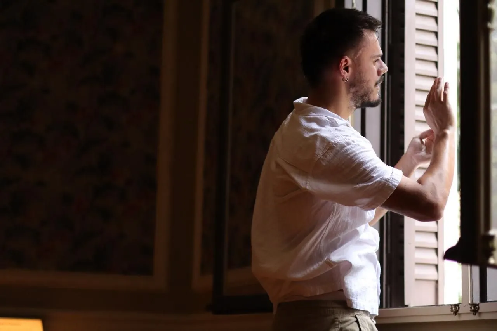

Marcus Moreno
Sobre

Marcus Moreno es magíster en Artes Escénicas por la Unicamp. Licenciado en Comunicación de las Artes del Cuerpo, tiene especialización en Técnica Klauss Vianna (PUC-SP) y profesorado en Teatro por la Universidade Anhembi Morumbi. Transita por campos poéticos buscando investigar las temporalidades, la improvisación escénica y la creación de redes de afectos.
Leer másCerrar
Desde 2012 realiza creaciones escénicas buscando siempre asociarse con otros colaboradores, y ha desarrollado distintos proyectos que involucran la producción de obras y eventos culturales, además de acciones formativas y de mediación de públicos. Entre sus creaciones escénicas están A Imagem como Ausência (ProAC/2013), A Flor da Lua (Residencia Artística Casa das Caldeiras/2016), Estudo para o Encontro (ProAC/2017), Instante-já (Fomento a la Danza/2019), creado junto a la artista uruguaya Andrea Arobba y nominado al Premio APCA-Danza en las categorías Espectáculo/Estreno y Premio Técnico por la creación de luz y espacio escénico; Entre-espaço onde tudo existe (videodanza concebida junto a Pri Magalhães/Nome Filmes) y Sempre mais que um, ambas producidas con apoyo del Fomento a la Danza en 2022; y Onde Houver Céu, también nominada al Premio APCA.
Desde 2016 desarrolla los Encuentros Efímeros, creando trabajos de improvisación con artistas de la escena contemporánea. En 2022, a partir de una investigación en el Posgrado en Artes Escénicas de la Unicamp, creó junto a Marisa Lambert y Mariana Molinos las Entrevistas performativas, una serie audiovisual sobre improvisación y afecto grabada con artistas como Zélia Monteiro, Mariana Muniz, Key Sawao, Alex Ratton, Wellington Duarte y Vera Sala. Es integrante del Grupo Práctica como Investigación: procesos de producción de la escena contemporánea (PPGAC | IA Unicamp). Ha conducido talleres, residencias artísticas y charlas en diferentes espacios culturales.
En el campo de la gestión cultural, trabajó en la Secretaría Municipal de Cultura de São Paulo (2009-2017), donde en sus últimos cuatro años coordinó el Programa Municipal de Fomento a la Danza de la Ciudad de São Paulo; participó en el proyecto de creación e implementación del Centro de Referencia de la Danza y en la curaduría del Circuito Municipal de Cultura. Participó en encuentros de gestión en eventos internacionales como el Festival Danzalborde (CL), FIDCU (UY) y EGA (AR). Trabajó en el programa de Formación para el Interior de las Oficinas Culturales del Estado de São Paulo (2017-2019), fue programador cultural de la Oficina Cultural Oswald de Andrade de 2020 a 2024, integró la Gerencia de Articulación y Difusión de las Fábricas de Cultura y actualmente es Asesor de Planificación Estratégica del Instituto Poiesis.